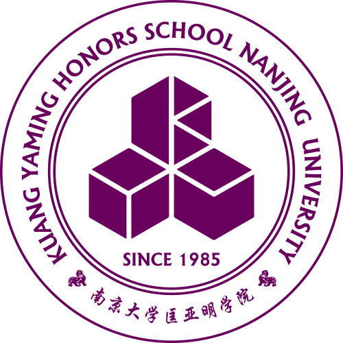

| 茅 宇 峰 Yufeng MAO Junior Undergraduate National Elite Program of Physics Kuang Yaming Honors School Nanjing University, China [My Email：yufeng.m@outlook.com] [中文页面] |
 | 
|
Thanks for reviewing my application! This personal website may provide more information for your reference:
- [Research Interest] section includes detailed descriptions and my preparation for my research interest;
- [Miscellaneous] section presents my extracurricular activities in diverse aspects.
Site Directory: [Biography] [Research Interest] [Awards & Honors] [Miscellaneous]
Biography
I was admitted to study at Kuang Yaming Honors School, Nanjing University in September 2018. After studying General Natural Sciences for one freshman semester, I declared Physics as my major and took Computer Science as an elective course.【GPA ranking(three terms) 9/103】
[go top]
Research Interest
I am interested in the field of Quantum Computation and Quantum Algorithm. After taking the course Quantum information and its application and finishing Quantum Computation and Quantum Information(Michael A. Nielsen & Isaac L. Chuang), I grew interested in Quantum error-correcting and physical realization of Quantum computers. I enjoy the process of studying theories and building models, so I wouldn't miss any chance to get involved in projects. [go top]
Awards & Honors
- First Prize of Elite Program Scholarship Award. 2019
- First Prize of People's Scholarship Award. 2019
- Advanced Individual of Social Work.2019
Miscellaneous
1. Minister of the Design Department of Students' Union, Kuang Yaming Honors School
I was the Minister of the Design Department of the Students’ Union in Kuang Yaming Honors School, Nanjing University, from July 2019 to September 2020, mainly in charge of student designing activities on campus. I led a group of 11 students in Kuang Yaming Honors School Design Department. My major contribution includes giving the vision solution for the 19th Forum of Sciences & Arts of Nanjing University, the largest student paper contest on campus. I also give help to freshmen in the department. Our department was awarded the best department in SU in KYM Honors School(The only one) and I was awarded the top ten minister. Here is a collection of some of my works.
2.Head of DII-WEB Group
DII-WEB aims to provide HTTP service for students in Kuang Yaming Honors School. In charge of the team in 2018, I mainly run two projects.
- File-system Project.This Project works for providing storage service for departments in SU of KYM Honors School.
- Forum Project.This project will give a platform for academic.
3.Research on Wifi distribution in a room
This research is the final homework for Computational Physical. I cooperated with two classmates and successfully gave the distribution in a room using the method of light tracing. I worked for all the algorithms and coding.
4.Psychological consultant of the elite class
One of psychological consultant of the elite class。
[go top]